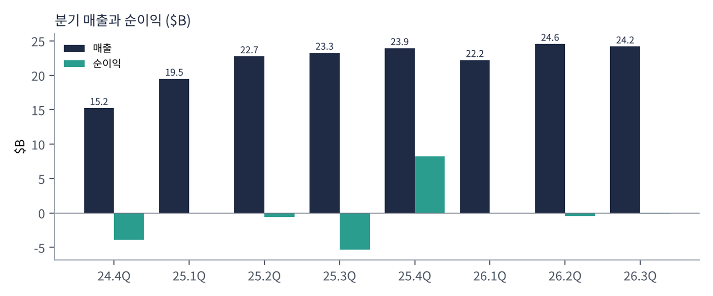
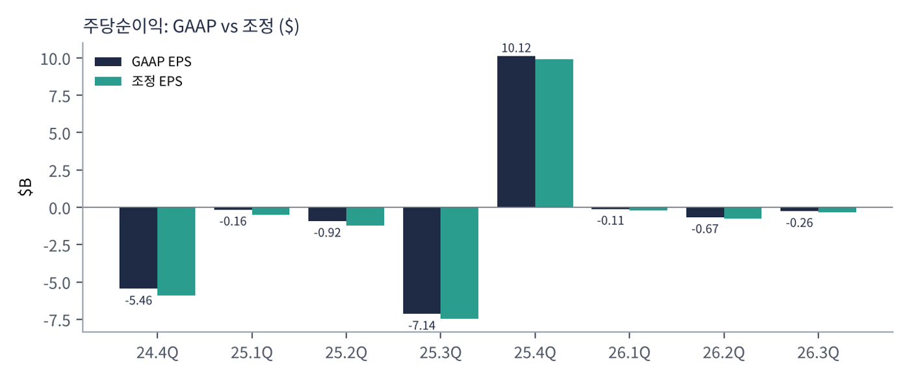
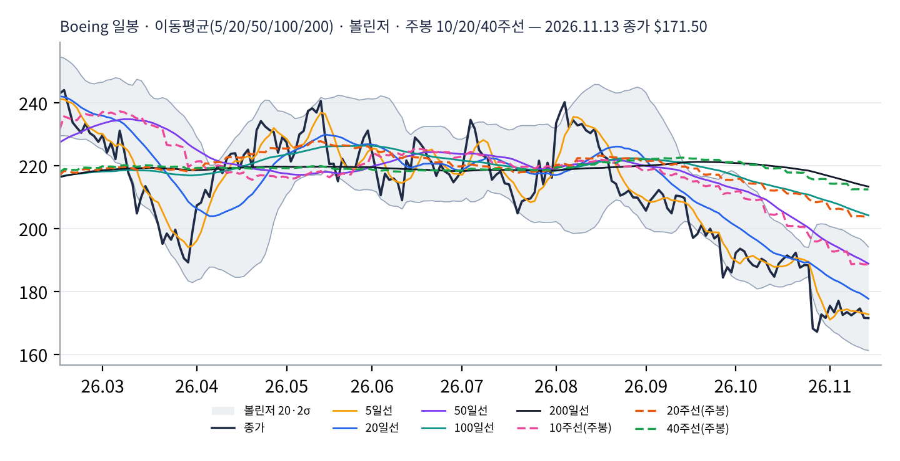
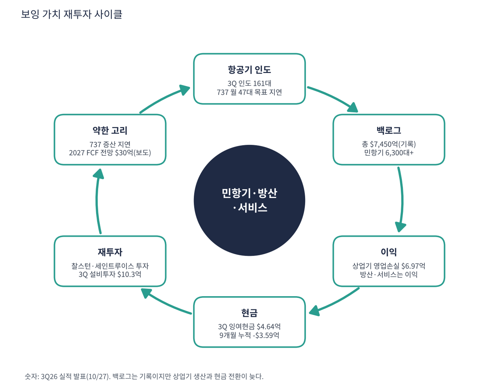

보잉은 민항기(737·787·777 등), 방위·우주·보안, 글로벌 서비스(부품·정비) 3개 부문을 가진 미국 최대 항공우주 기업이다. 3분기 매출은 $242억(+4%)에 순손실이 $1.16억으로 크게 줄고 잉여현금도 2분기 연속 플러스였지만, 상업기 부문은 여전히 영업적자이고 737 증산(월 47대)이 늦어지는 회사다.
| 항목 | 내용 |
|---|---|
| 종목 | The Boeing Company (BA) · NYSE · 항공우주·방산 · 본사 미국 버지니아주 알링턴 |
| 밸류에이션 | PER 18.9배(GAAP TTM, 4Q25 일회성 이익으로 왜곡) · P/S 1.43배 (11/13 종가 $171.50) |
| 최근 분기(3Q26) | 매출 $241.9억(+4%), 순손실 $1.16억(전년 -$53.4억), GAAP EPS -$0.26, 핵심(core) EPS -$0.34 |
| 부문(3Q) | 상업기 매출 $107.2억·영업손실 $6.97억(-6.5%) · 방산·우주 $79억·영업이익 $4.92억(6.2%) · 서비스 $55.7억·영업이익 $10.19억(18.3%) |
| 현금·부채 | 현금·유가증권 $207억, 총차입금 약 $459억, 영업현금 $15.0억, 잉여현금 $4.64억(전년 $2.38억), 9개월 누적 -$3.59억. 미사용 신용한도 $100억 |
| 백로그 | 총 $7,450억(기록), 민항기 6,300대 이상, 방산·우주 $1,010억(해외 23%) |
| 다음 실적 | 4Q26 실적: 2027년 1월 27일 예정(트레이딩뷰) |
| 직책 | 인물 | 역할·특징 |
|---|---|---|
| 사장·CEO | 켈리 오트버그 | 백로그 인도와 문화 개선이 남았다고 직원 메모에서 밝힘(로이터 보도) |
경영 스타일: '생산 안정화와 현금 회복이 우선이다'. 3Q에 미국 해군의 차세대 전투기(F/A-XX) 설계·제작 업체로 선정됐고, 737-7과 737-10 인증을 받았다. 그러나 737 증산(월 42대→47대)이 늦고 오트버그는 날개 생산 부족을 9월에 언급했다.
상업기는 737·787·777X, 방산·우주는 전투기·미사일, 서비스는 부품·정비·디지털이다. 서비스가 가장 안정적이다.
737 월 47대와 787 월 8대 이상을 안정적으로 달성하고 잉여현금을 키우는 것이다. 보도에 따르면 회사는 2029년 잉여현금 $100억 목표를 1년 늦췄다.
다음 실적발표는 세 가지 질문에 답하는 자리다.
1. 인도가 이번 분기에 개선되나?
2. 악재 '737 증산 지연' 부담이 줄어드나?
3. PEG 판정이 바뀌나?
한 줄 판정 규칙: 첫 질문의 인도가 좋아지면 약한 고리가 풀리고, 그렇지 않으면 현재 사이클의 약점이 그대로 남는다.
일정: 다음 발표일은 확인 필요(이번 분기 발표 후 일정 미확정). 위 현재값은 이 보고서의 기존 숫자다.
| 분기 | 매출 | 순이익 | EPS | 조정 EPS | 특이 사항 |
|---|---|---|---|---|---|
| 2024.4Q | $152.4억 | $-38.6억 | -5.46 | -5.90 | |
| 2025.1Q | $195.0억 | $-0.4억 | -0.16 | -0.49 | |
| 2025.2Q | $227.5억 | $-6.1억 | -0.92 | -1.24 | |
| 2025.3Q | $232.7억 | $-53.4억 | -7.14 | -7.47 | 777X 관련 약 $49억 충당 반영 |
| 2025.4Q | $239.5억 | $82.2억 | 10.12 | 9.92 | 순이익 $82.2억(원인 미확인) |
| 2026.1Q | $222.2억 | $-0.0억 | -0.11 | -0.20 | |
| 2026.2Q | $245.6억 | $-4.4억 | -0.67 | -0.76 | |
| 2026.3Q | $241.9억 | $-1.2억 | -0.26 | -0.34 | 상업기 영업손실 $6.97억 |


조정 EPS는 보잉이 발표하는 핵심(core) EPS이며 트레이딩뷰 'Reported' 값과 같다. EPS는 스캐너 GAAP 희석 EPS다. 4Q25 순이익 $82.2억과 EPS는 원인을 확인하지 못했다.
흐름 요약: 분기 매출은 $152억(4Q24)에서 $222~246억으로 회복했고, 순이익은 3Q25 -$53.4억(777X 관련 약 $49억 충당 포함)에서 3Q26 -$1.16억으로 줄었다. 최근 4분기 중 3개 분기는 핵심 EPS도 적자다(-$0.20, -$0.76, -$0.34). 영업이익과 분기 설비투자의 8분기 값은 구하지 못해 표에서 뺐다(3Q 설비투자는 $10.3억).
| 구분 | 3Q26 매출 | 영업이익(손실) | 비고 |
|---|---|---|---|
| 상업기 | $107.2억(약 44%) | -$6.97억 (-6.5%) | 인도 161대. 인도 구성 악화, 증산 비용, 공급망 비용 |
| 방산·우주·보안 | $79억(약 33%) | $4.92억 (6.2%) | HRL 지분 매각이익 $2.52억 포함 |
| 글로벌 서비스 | $55.7억(약 23%) | $10.19억 (18.3%) | +4%, 가장 안정적 |
이익은 서비스에서 나오고 상업기가 이를 깎는다. 방산 영업이익에는 일회성 매각이익이 들어 있어 이를 빼면 약 $2.4억(3%)이다(내 계산). 매출 비중은 회사 발표 부문 매출 합계 기준 내 계산이다.
보잉의 방향은 '737 증산과 인증 마무리로 인도를 늘리고 방산 신규 수주로 균형을 잡는 것'이다.
| 축 | 최근 움직임 |
|---|---|
| 상업기 인증 | 737-7 인증 취득, 737-10 10월 인증 |
| 방산 | F/A-XX 선정(백로그 미반영), PAC-3 시커 증산 7년 계약 |
| 투자 | 찰스턴·세인트루이스 투자 확대, 3Q 설비투자 $10.3억 |
| 현금 전망 | 보도: 2027 잉여현금 약 $30억(시장 예상 $55억), 2029 $100억 목표 1년 지연 |

| 이동평균 | 값 | 종가 대비 | 해석 |
|---|---|---|---|
| 5일선 | $172.67 | -0.7% | 현재가가 아래 |
| 20일선 | $177.64 | -3.5% | 하향 |
| 50일선 | $188.82 | -9.2% | 하향 |
| 100일선 | $204.17 | -16.0% | 하향 |
| 200일선 | $213.33 | -19.6% | 현재가가 크게 아래 |
주봉 흐름: 2025년 11월 저가 $176.8 → 2026년 1월 고점 $254(1/26 주) → 3~5월 $190~244 → 6~8월 $203~241 → 9월 이후 하락 → 10/26 주 저가 $165(55일 저점) → 11/9 주 종가 $171.5.
| 규칙 | 기준 | 현재 값 | 신호 |
|---|---|---|---|
| 장기 추세 필터 | 종가 vs 200일선 | $171.50 < $213.33 | 매도 |
| 중장기 교차 | 50일선 vs 200일선 | $188.82 < $213.33 | 매도 |
| 단기 교차 | 20일선 vs 50일선 | $177.64 < $188.82 | 매도 |
| 돈키언 채널 | 55일 고가 $215.29 / 저가 $165.01 | 중간값 $190.15 아래 | 매도 |
| 1개월 모멘텀 | 21거래일 수익률 | -9.1% (기준 $188.73) | 매도 |
| 3개월 모멘텀 | 63거래일 수익률 | -24.1% (기준 $225.95) | 매도 |
| 6개월 모멘텀 | 126거래일 수익률 | -22.2% (기준 $220.49) | 매도 |
| 12개월 모멘텀 | 252거래일 수익률 | -12.3% (기준 $195.50) | 매도 |
| 종합 (8개 평균) | -1.00 | 강한 매도 |
해석: 8개 신호가 모두 매도로 -1.00(강한 매도). 주가는 55일 저점($165.0) 바로 위이고 200일선($213.3)과의 거리가 크다. 14일 ATR $6.10 (3.6%).
| 가격 | 무엇이 바뀌나 | 의미 |
|---|---|---|
| $177.6 상향 돌파 | 20일선 | 단기 추세 회복 |
| $188.7 상향 돌파 | 1개월 모멘텀 | 매도 → 매수 1개 전환 |
| $190.2 상향 돌파 | 돈키언 중간값 | 55일 채널 전환 |
| $195.5 상향 돌파 | 12개월 모멘텀 | 추가 1개 전환 |
| $213.3 상향 돌파 | 200일선 | 장기 추세 필터 전환 |
| 구분 | 가격대 | 근거 |
|---|---|---|
| 저항 1 | $173 | 5일선 |
| 저항 2 | $178 ~ 189 | 20일선·50일선 |
| 저항 3 | $213 | 200일선 |
| 지지 | $165 | 55일 저점(10/26 주 저가)·52주 저점 |
추세 추종으로는 매수 구간이 아니다. 저점 반등을 노리는 역추세라면 $163~172에서 계획 비중의 30%만 진입하고 종가 $155(52주 저점 $165 아래) 이탈 시 손절한다. 1차 목표 $178(20일선), 2차 $189(50일선, 내 가정). 20일선 회복 전에는 비중을 늘리지 않는다.
| 악재 요인 | 내용 | 강도 |
|---|---|---|
| 737 증산 지연 | 월 47대 목표 지연, 날개 등 공급망 병목 | 높음 |
| 상업기 적자 | 3Q 영업손실 $6.97억(-6.5%) | 높음 |
| 부채 | 총차입금 $459억, 현금 $207억 | 중간 |
| 현금 전망 | 보도: 2027 잉여현금 $30억(시장 예상의 약 55%) | 중간 |
| GAAP 왜곡 | 4Q25 순이익 $82.2억이 TTM EPS를 키움 | 참고 |
| 티커 | 회사 | PER(TTM) | PEG | P/S | EPS 성장(YoY) |
|---|---|---|---|---|---|
| BA | 보잉 | 18.9배 | – | 1.43배 | – |
| RTX | RTX | 32.3배 | – | 2.83배 | +26% |
| LMT | 록히드마틴 | 21.2배 | – | 1.77배 | +57% |
| GE | GE 에어로스페이스 | 38.3배 | – | 6.55배 | +15% |
모두 트레이딩뷰 GAAP TTM 기준이다. BA의 PER 18.9배는 4Q25 일회성 이익으로 낮게 나온 것이며 의미가 작다.
BA는 현금이 늘기 시작했지만 부채가 현금의 2배를 넘는다. 현금·유가증권 $207억, 총차입금 약 $459억으로 순부채는 약 $252억이다.
| 지표 | 값 | 계산·출처 | 해석 |
|---|---|---|---|
| 현금·유가증권 | $207억 | 회사 발표 | 전분기 $200억 |
| 총차입금 | 약 $459억 | 스캐너 | 순부채 약 $252억(내 계산) |
| TTM EBITDA | 약 $22억 | 스캐너 | GAAP 기준 |
| TTM 잉여현금흐름 | 약 $0 | 스캐너 | 3Q 단독 $4.64억, 9개월 누적 -$3.59억 |
| 3Q 영업현금 / 설비투자 | $15.0억 / $10.3억 | 회사 발표 | DOJ 합의금 약 $7억 지급 후 수치 |
| 기준 | 값 | 비고 |
|---|---|---|
| P/S (TTM) | 1.43배 | TTM 매출 $949억(내 계산과 스캐너 일치) |
| EV / 매출 | 약 1.7배 | EV $1,611억 ÷ $949억(내 계산) |
| P/FCF (2027 전망 $30억, 보도) | 약 45배 | 매출 $30억(내 계산) |
| P/FCF (2029 목표 $100억, 보도) | 약 14배 | 매출 $100억(내 계산) |
| 동종 | RTX 2.8, LMT 1.8, GE 6.6 | 11/13 스캐너 |
해석: 이익이 없어 매출 기준으로 본다. 스트레스 가정(TTM 매출 $949억·주식 7.93억 주 고정, 내 가정): P/S 1.0배면 주가 약 $120(-30%), 1.2배면 $144(-16%), 1.6배면 $192(+12%)이다. 현재 1.43배다.
| 지표 | 값 | 판정 |
|---|---|---|
| PER (GAAP TTM) | 18.9배 | TTM EPS $9.08 — 4Q25 $10.12에 좌우됨 |
| PER (핵심 TTM) | 해당 없음 | TTM 핵심 EPS $8.62이나 4Q25 $9.92 포함, 나머지 3분기 합 -$1.30 |
| EV / EBITDA (TTM) | 약 73배 | EV(차입금 $459억 − 현금 $207억 반영),611억, ÷ $22억 |
| 방식 | PER | EPS 성장률 | PEG | 판정 |
|---|---|---|---|---|
| 트레이딩뷰 (GAAP TTM) | 18.9배 | 표시 없음 | – | 트레이딩뷰는 PEG를 주지 않음 |
| 핵심 EPS 기준 (4Q25 제외 3분기) | 해당 없음 | – | 산출 불가 | 3분기 합 -$1.30로 적자 |
| 3Q26 핵심 EPS -$0.34 ÷ 3Q25 -$7.47 | – | – | 산출 불가 | 적자 지속, 전년 대비는 손실 축소 |
판정: PEG는 산출 불가다. TTM EPS가 흑자인 것은 4Q25 순이익 $82.2억(원인 미확인)이 1년 합계에 들어 있기 때문이다. 이를 빼면 핵심 EPS는 세 분기 연속 적자다. 가치 판단은 백로그($7,450억), 잉여현금 회복 속도, EV/매출 1.7배로 한다.

사이클은 수주 백로그 → 항공기 인도 → 이익 → 현금 → 설비 재투자다. 상업기 생산 지연이 약한 고리다.
| 고리 | 현재 숫자 | 고리 강도 | 약해지는 신호 |
|---|---|---|---|
| ① 수주 | 백로그 $7,450억(기록) | 강함 | 주문 취소 |
| ② 인도 | 3Q 161대, 737 월 47대 지연 | 약함 | 공급망(날개) 병목 |
| ③ 이익 | 상업기 -6.5%, 서비스 18.3% | 부담 | 증산 비용 추가 |
| ④ 현금 | 3Q 잉여현금 $4.64억, 9개월 -$3.59억 | 회복 중 | 운전자본 역전 |
| ⑤ 부채 | 총차입금 $459억 vs 현금 $207억 | 부담 | 금리, 신규 조달 |
| ⑥ 약한 고리 | 737 증산 지연, 2027 FCF 전망 $30억(보도) | 약함 | 월 47대 목표 추가 지연 |
구조: 강한 고리는 ①, 약한 고리는 ②③④⑤⑥이다.